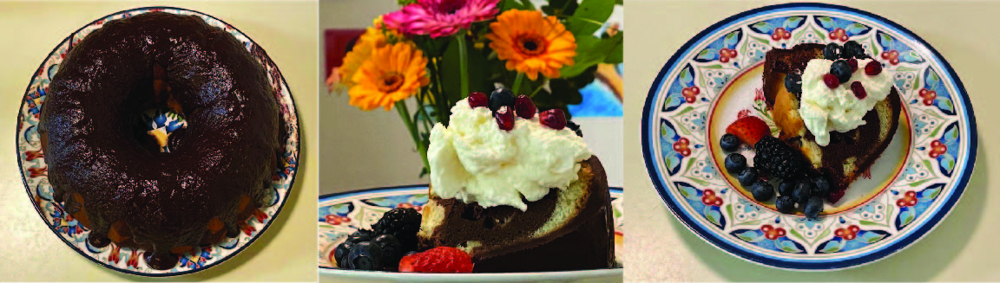

Marble Bundt Cake
One of my college counselors recommended that I identify as Caucasian for UC schools and Asian for East Coast schools to raise my chances. I thought that was a good thing. I could flip flop between two races, constantly picking the side that was most convenient for me. I wanted to feel the flexibility of being a halfie, but really, I was trapped in between, not ever belonging on either side.
This recipe is matched with Chapter 3 of “The Asian Fail”, which describes how my multiracial background complicates my relationship with the Asian Fail. The marble bundt cake has two components, vanilla and chocolate, that are intertwined, representing my halfie status. Also, the cake is super filling and dense, so I could eat it for breakfast and be able to skip lunch, which connects with the times in high school when I skipped lunch to study in the library.
I came up with this recipe after my dad told me he wanted a marble cake for his birthday. I have been making this recipe quite often because it’s a family favorite. The swirl patterns are fun to look at and make every slice appear unique. The cake tastes twice as amazing with a chocolate ganache layer, so I highly recommend not skipping that part.
Recipe makes one 10-inch bundt, and it’s gluten free!
Ingredients
Equipment
- 10-inch greased bundt cake pan
(typically the standard size) - Two mixing bowls (one large, one medium)
- Scale and/or measuring cups1
- Electric mixer
- Rubber spatula
- Cooling rack
Cake Base
- 1 cup (227 grams) butter at room temperature2
- 1.5 cups (350 grams) granulated sugar
- 1 tbsp vanilla extract
- 4 large eggs at room temperature
- 1 cup (225 grams) buttermilk3
- 3 cups cake flour4
- 2 tsps (9.6 grams) baking powder
- 1/2 tsp salt
Cake Flavoring
- 2/3 cup (65 grams) dutch-processed
cocoa powder - 1/2 cup (123 grams) milk
- 1 tsp vanilla extract
Chocolate Ganache
- 1 cup (160 grams) dark chocolate chips
- 2/3 cup (160 grams) heavy cream
Instructions
- Preheat: preheat oven to 350°F
- Mix the dry ingredients: in a medium mixing bowl, combine the flour, baking powder, and salt. Stir until ingredients are well distributed
- Cream butter: in the large mixing bowl, cream the butter on medium speed until smooth. Usually this takes around 5 minutes
- Add the sugar: add granulated sugar and cream on medium speed until mixture is pale yellow, light, and fluffy. Takes around another 5 minutes. Use a rubber spatula to scrape the sides of the bowl one or twice while mixing
- Add in remaining wet ingredients: add in the eggs one at a time, mixing on medium-low speed until incorporated. Add in 1 tbsp vanilla extract and the buttermilk. Mix until evenly combined
- Add dry to wet: pour the dry ingredients into the mixing bowl containing the wet ingredients and fold together with a rubber spatula until all traces of flour disappear5. The batter should be thick and contain minimal clumps
- Separate batter and flavor: pour half of the batter into the medium mixing bowl6 and mix in the cocoa powder and milk to form the chocolate batter. In the large mixing bowl containing the remaining half, add 1 tsp of vanilla extract7 to enhance the vanilla flavor
- Final touches before baking: use two large serving spoons or 1/4 cups to scoop the chocolate and vanilla batters into the greased pan, alternating to create a marbled pattern8
- Bake: bake the bread at 350°F between 50 and 70 minutes9. It’s done when a toothpick inserted in the middle comes out clean, and the cake has a slight spring when lightly pressed
- Make the chocolate ganache: heat up the heavy cream in the microwave in 30 second intervals until the heavy cream is warm but hasn’t boiled. Add in the chocolate chips and fold them in with a rubber spatula. Keep folding until the chocolate has melted, and a thick and smooth liquid chocolate texture has formed10
- Cool: after you take out the cake, cool until slightly warm before flipping the cake onto a cooling rack lined with parchment/wax paper. Let the cake cool to room temperature before drizzling the top of the cake with chocolate ganache11. Transfer the cake to a serving plate and bon appétit! Store the cake in the fridge if you don’t want the chocolate ganache to melt. The cake would become a lot more dense, which actually goes pretty well with the ganache and flavors
Tips and Tricks
- I like to use a scale for dry ingredients and measuring cups for liquids
- It’s important for the butter to be at room temperature before creaming it. You can tell that butter is at room temperature if it’s malleable to the touch. Microwaving to soften the butter isn’t the same since it won’t trap enough air
- In case you don’t have buttermilk at home, there are several possible substitutes. You can make your own buttermilk by adding white vinegar or lemon juice to milk. For 1 cup of buttermilk, pour out just under 1 cup worth of milk, then add 1 tbsp of white vinegar or lemon juice. After that, add milk up to the 1 cup mark. Let the mixture stand for 5-10 minutes until the milk curdles. Other buttermilk substitutes include 1 cup of kefir or 3/4 cup plain yogurt/sour cream with 1/4 cup water
- You can use regular cake flour, but I like to make this recipe gluten free. To do that I add 333 grams of all-purpose gluten free flour, 56 grams of almond flour, and 37 grams of cornstarch. To make the cake less dense you can add more almond flour and less all-purpose gluten free flour
- Mix until just combined. You don’t want to overmix, especially if you are using regular flour since the gluten will start coagulating, which would make the cake less soft
- You can just re-use the mixing bowl with the dry ingredients after wiping it
- I also like to add a few tsps of rose water or orange liquor (e.g. cointreau or grand marnier) to the batters to give them a slight fruity scent
- There are several ways to create the marble pattern. One is to drop a scoop of batter into the pan and then top it with a scoop of the other batter. While alternating batters, you would continuously drop scoops on top of each other. The batter would start to flow around the center and fill up the entire bundt pan. Throughout the process, don’t stir the batter. You can level it out by gently tapping the pan a few times. This method is a bit tricky to implement, so I usually use another method. A second method is to dot large spoonfuls of one batter into the bottom of the pan and then drop large spoonfuls of the other batter over the first layer, checkboarding the two layers a bit. Continue the layering process until all the batter is depleted and then use a skewer or knife to marble the batters together in figure-8 motions
- The bake time has been consistently an hour for me
- You can also make the chocolate ganache over the stove. Just heat up the heavy cream in a small saucepan until it is simmering and then add the chocolate chips. On low heat, keep stirring until the chocolate is melted and you get that thick chocolate ganache viscosity. If you want a thicker chocolate ganache, then half the amount of heavy cream
- The easiest way to drizzle chocolate ganache over the cake is to slowly pour the ganache around the top of the cake. If the ganache is too thick, you can add some orange liquor or rose water to thin it out. You want to pour closer to the outside edge of the cake, so the ganache will drip down the sides instead of inside the hole